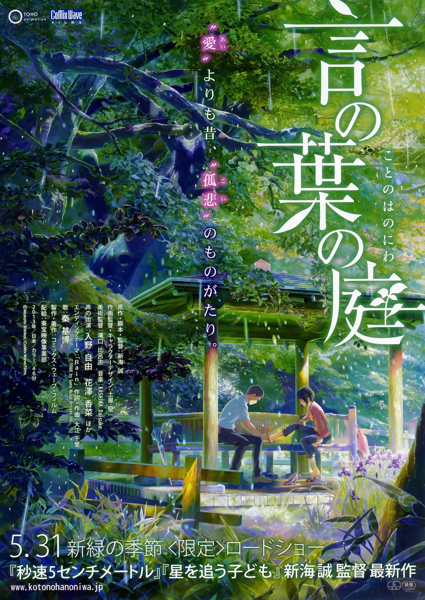

年方15岁的高中生秋月孝雄（入野自由 配音），专心学业的过程中不得不为了生计打工赚钱。母亲离家出走，他与哥哥过着看不到前方的生活。入梅之日，孝雄逃课来到日本庭园。在一座安静的小亭子里，27岁的职场女性雪野百香里（花泽香菜 配音）边吃巧克力边饮啤酒的样子引起了孝雄的注意。似曾相识的二人，仿佛约定好了一般，每到落雨之日便从世俗的烦恼中逃脱出来，相会于这座钢筋铁骨都市丛林中宛若世外桃源的幽静角落。在梅雨季节的日子里，他们的心渐渐向彼此靠拢。志愿成为手工鞋匠的秋月，决心以雪野为模特做一双鞋。
雨过天晴，艳阳高照，庭园中久久不见秋月和雪野的身影，相会无期亦有期……
雨过天晴，艳阳高照，庭园中久久不见秋月和雪野的身影，相会无期亦有期……